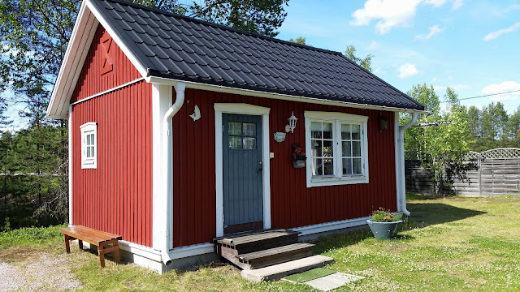
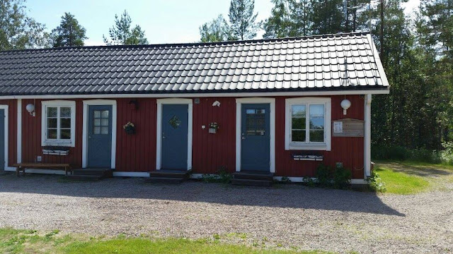
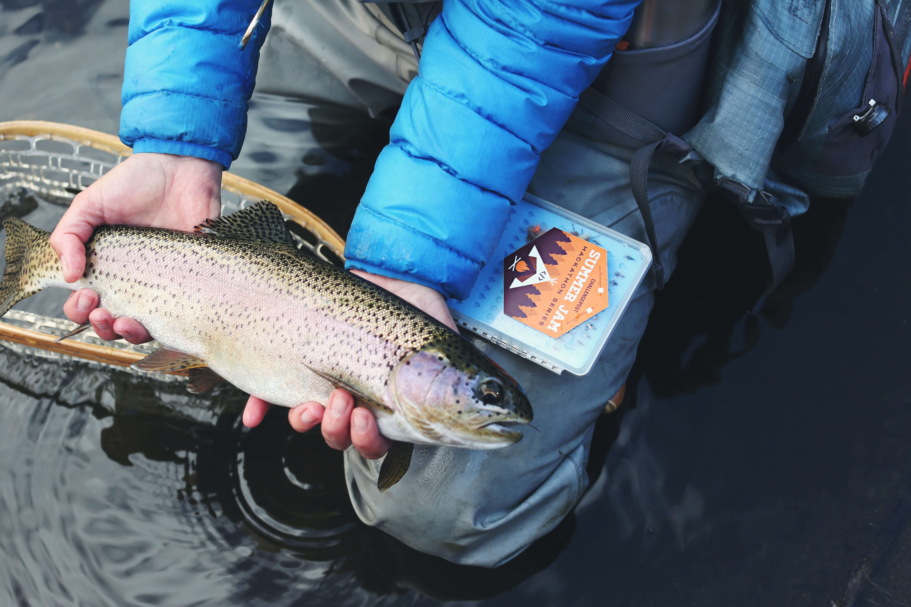
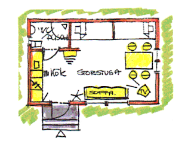
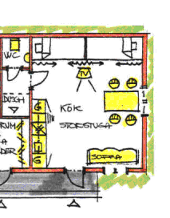
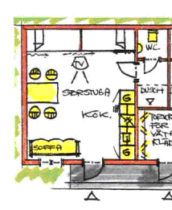
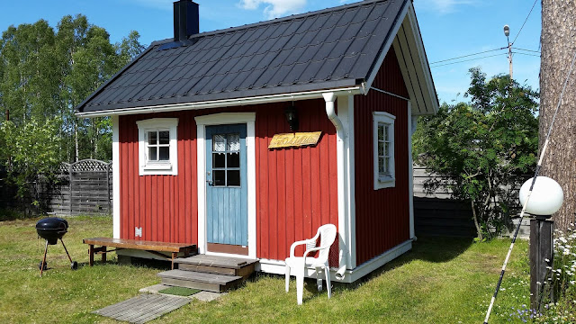
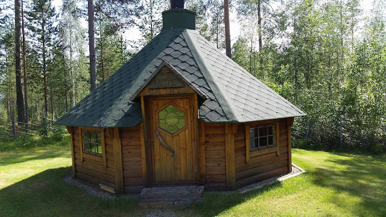
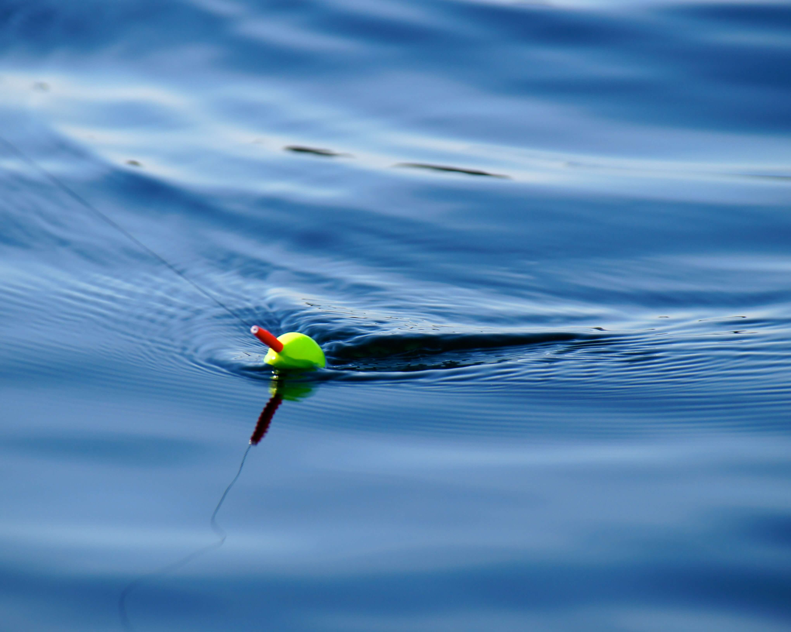
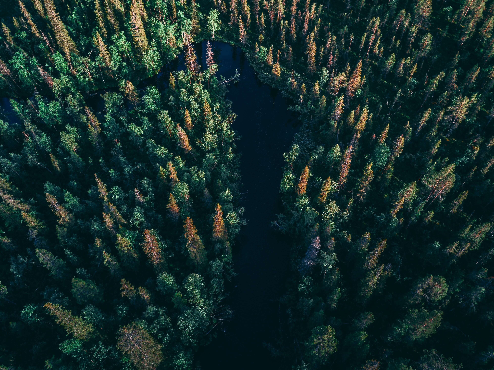

Fiske och Stugor i Norrbotten
Boka din vecka — säsongen är kort


Inte säker? Mejla Juha med en fråga — Klicka för att mejla Juha
Du kan knappast hitta ett bättre och mysigare boende om du planerar att semestra i Norrbotten. Är det en fiskesemester du vill ha så har du funnit det rätta stället! Tre mysiga fyra-bäddsstugor, fullt utrustade med kök, toalett och dusch. I anslutning till stugorna finns även en mycket fin vedeldad bastu samt den mysiga grillkåtan-TOP ARCTIC.
Stugorna ligger endast ca 100m från en i trakten välkänd harrfors, Tväråforsen. Förutom harr kan du om du har tur kanske kroka en nyuppstigen Öring. Om det är lax du är ute efter så är du endast minuter ifrån bland de bästa laxforsarna i Sverige - Ängesån och Kalix älv. Tvärån är en liten idyllisk by vid E10:an, ca 18 km norr om Överkalix centralort. Avståndet till polcirkeln är endast ca 15 km.


Mycket mysig och 4-bäddsstuga på 24 m², utrustad med alla bekvämligheter. Perfekt för de som avser att fiska lax, harr och öring i älvarna Ängesån och Tvärån. Frysmöjligheter för fiskare och bärplockare.

Något större stugor, båda på ca 28 m² med 4 bäddar. Robust inredning med timrade väggar och furupanel. Fullt utrustade kök. WC och dusch med varmvatten.


Vedeldad bastu i nära anslutning till stugorna. Går att boka på plats. Upp till 4 personer.

Top Arctic är mycket mysig med en eldstad i mitten. Helt perfekt för grillpartyn och annan samvaro. Upp till 20 personer kan samlas här för konferenser, möten och "after fishing".

Vi säljer även fiskekort för er som vill ha en fiskesemester! Besök gärna www.angesan.se för regler.
Laxfiske är tillåtet från och med 1 Juni till 31 Juli.
Tvärån ligger längs E10 — den klassiska rutten mot Lofoten. Stanna till, vila upp dig och fiska en natt eller två innan du fortsätter norrut.

18 km norr om Överkalix centralort invid väg E10 ligger byn Tvärån. Innan ni kommer till Tvärån passerar ni byn Gyljen. Tvärån ligger ca 8 km ytterligare norrut. Stugorna ligger på höger hand om ni kommer från söder.
Boka stuga i tid, då efterfrågan under fiskesäsong är hög. Vid frågor kontakta Juha via mejl